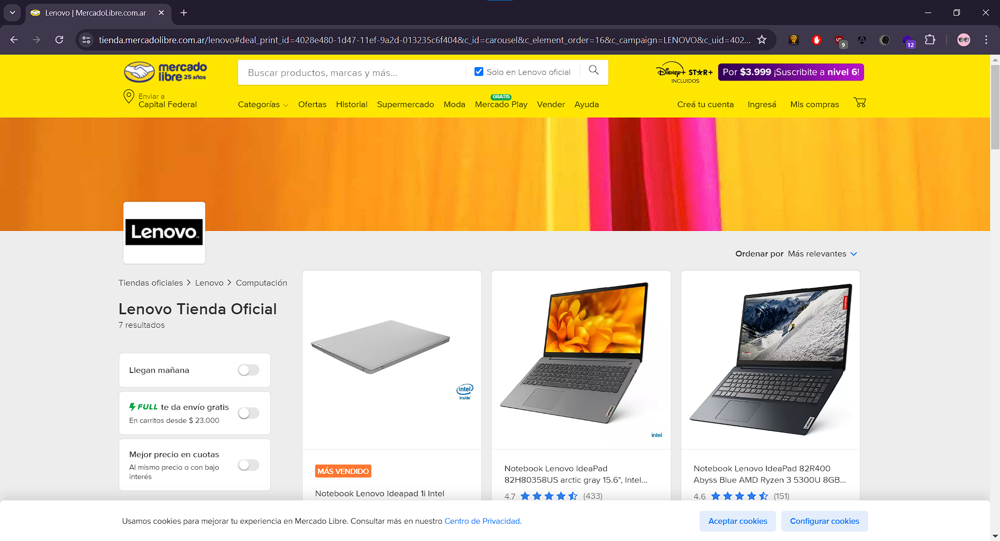
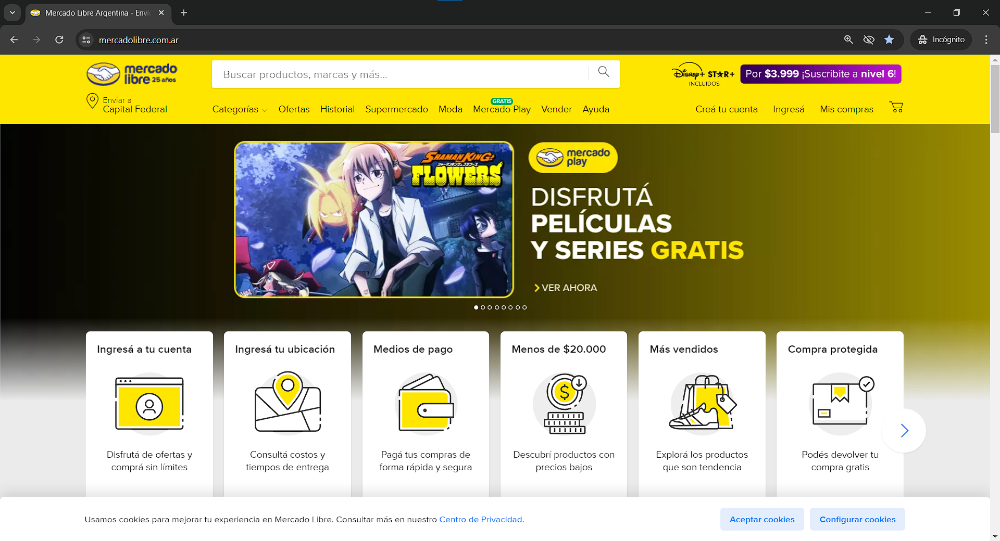
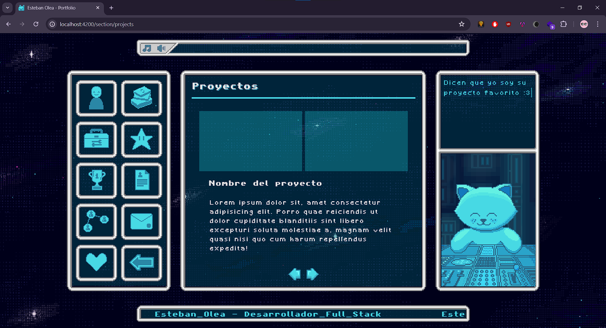
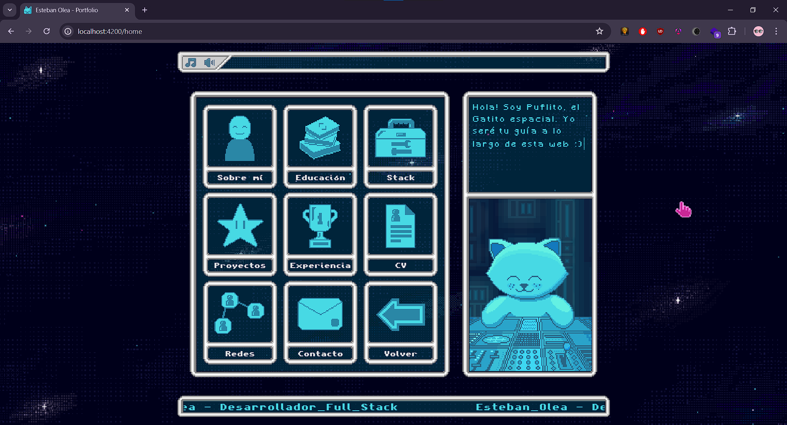

Así es! Yo programé Mercadolibre, acaso lo dudabas?
Na, en realidad este es un proyecto de prueba para esta sección, si estás leyendo esto significa que todavía no publiqué la versión definitiva.


En este proyecto hay implementados tantos conceptos y tecnologías que no podría parar de escribir! Por mencionar algunos:
- RxJS.
- HTTP Requests
- Angular Animations
- Manejo de Estado